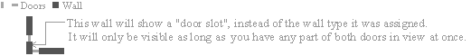
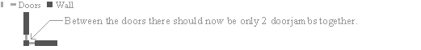
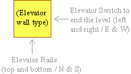
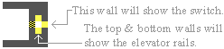
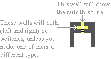
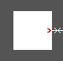

Wolfenstein 3-D and Spear of Destiny
Tips on Designing Good Levels
By Brian
J. “Blazkowicz” Rowan
Designer
of “The Renovation” and “Conflict in the Fatherland”
© Copyright 1994-1999
Table of Contents
1.0
- Introduction to Wolfenstein Level Editing
1.1
- Thanks and Praise to id Software
2.0
- Description of the Level Editors
2.1
- Where Are These Editors Available?
2.2
- I Keep Getting “Runtime Error 200” When I Run Mapedit; Why?
2.3 - Differences Between Wolf3D
and SOD
2.4
- Editing Spear of Destiny Additional Missions 2 & 3
3.0
- Designing New Levels: MAP mode
3.1 - Getting Started
3.2 - Walls
3.3 - Floor Codes
3.31 - What Happens
if you Mess Up…
3.32 - “Deaf Guard”
Floor Code Errors
3.4 - Doors
3.5 - Secret Doors (Pushwalls)
3.6 - Elevators
3.7 - Secret Elevators
3.8 - Overall Tips and Strategies
for Level Design
3.9 - Ceiling Colors
4.0
- Designing New Levels: OBJECT mode
4.1 - Guards
4.11 - Moving
(Patrolling) Guards
4.12
- Stationary Guards
4.2 - Tricks
4.3 - Ammo and Weapons
4.4 - Food and Health Packets
4.5 - Treasure
4.6 - Keys
4.7 - “Furniture”
4.8 - Other Objects
5.0
Other Tips/Strategies
5.1
- Number of Objects in View
5.2 - Special Wall Types
5.3 - Hiding Secret Areas
5.4 - Rearranging the Order of Your
Levels (without changing the EXE)
6.0
- Playtesting your New Level(s)
6.1 - Common Problems
7.0
- Graphics and Sound Editing: Things You Should Know
7.1 - Graphics Editing
7.2 - Sound Editing
8.0
- Other Available Modified Levels
APPENDIX A: Level
Data Quick Reference
A-1
- Wolfenstein Level Limits
A-2
- Treasure/Ammo/Health Calculations, etc.
APPENDIX B: Ceiling
Color Reference
B-1 - Wolfenstein Ceiling
Color Chart
B-2 - Spear of Destiny Ceiling
Color Chart
APPENDIX C: Troubleshooting / Strange Effects Reference
1.0 - Introduction to Wolfenstein Level Editing
Hello to all you Wolf-3D fans (and hackers)! This file is a bunch of tips I’ve put together about successfully creating a good Wolfenstein or Spear of Destiny level, using “the” map editor, MapEdit. What I’ve learned over the past few years is that you can’t just create a decent level by selecting a map/wall type and dragging your mouse across the screen. Of course, I suppose your view of “decent” depends on what you like, but I tend to like the “realistic” design that the original Wolf3D levels seemed to have. This document will show you some of the best ways to make those kinds of levels (because what kind of tips do you need to drag a mouse cursor across the screen?).
Over time I’ve seen plenty of Wolfenstein levels. I have a collection of well over 800 levels created by various authors. A few of them were good…but only a few. The rest contained either a ridiculous number of pushwalls (100+), were random maps, or even simple modifications of the original Wolfenstein levels. All of these last types of levels are, IMHO, “Wolfenstein junk”. I think that if you want to make levels, you should want the people who will play them to get the same sense of enjoyment out of them as we all have from the original id Software levels. To do this, you have to attack the level creation process with a certain diligence that involves a thorough knowledge of all of the original 60 levels. It may help if you work on your levels in the same place and atmospheric conditions, if possible, that you originally played Wolfenstein in. I’ve found that helps me immensely at times. Also, if you want to make high quality levels, take a look at what id Software has done with theirs. Mimic their designs. Choose the same combinations of wall textures and ceiling colors. In the end, you ought to come out with a pretty decent level. Just remember that good levels are not made only by the amount of German soldiers it contains – they’re made by graphic appearance and playability as well.
Please take note that this level design guide is written with MapEdit in mind as the editor of choice. It was written well before FloEdit was ever conceived. Most things are generally the same, as FloEdit’s level editor is based on MapEdit code and looks very similar. You shouldn’t have any problem adapting any mentioned techniques to Flo’s editor if that’s your preference.
1.1 - Thanks and Praise to id Software
Before we start, I must give thanks to id Software, Inc., for creating this great game, and to Apogee for distributing it, because without them there wouldn’t BE any Wolfenstein, or, obviously, any map editors. Oh, yes, and please be aware that my use of the term “hackers” refers to people who enjoy looking into games and programs to see what makes them work - not “crackers”, who are the nuts that infiltrate networks and lock people out and cause general chaos.
2.0 - Description of the Level Editors
There are currently two modern-day Wolfenstein editors that have been kept up to date after all this time:
- Mapedit,
by Bill Kirby, with modifications by Dave Huntoon, Bryan Baker, Matt Gruson,
and Warren Buss. This is the original editor for Wolfenstein, which first
debuted back in 1992.
Current version: 8.4
Platform: DOS - FloEdit,
by Florian Stöhr. This new and very awesome editor can do it all: levels,
sprites, walls, VGAGRAPH images, even digital sounds. It edits like nothing
you’ve ever seen – a complete all-in-one solution. The level editor is essentially
MapEdit, built right in – and ported to Windows. You can edit the definition
files right in the editor, even do awesome things like add slots for
graphics to the VSWAP! It’s a miracle! Edits both Wolfenstein and Spear.
Current version: 1.0
Platform: Windows 95 / 98
These are both very excellent programs – I recommend FloEdit for its sheer versatility and excellent design. If you choose to download the original DOS-based Mapedit, take note that versions 7.0 and higher of MapEdit do not support the shareware version of Wolfenstein (and for good reason). One particularly nice feature of MapEdit is that it can save individual floor files which can be read into any level. This is nice when you want to distribute just a few floors to a friend who also has a copy of the editor.
2.1 - Where Are These Editors Available?
You can find Mapedit in many corners of the Internet, but to be specific, you can get the latest version, 8.4, from B.J. Rowan’s Wolf3D Bunker. Follow this link for an immediate download.
2.2 - I Keep Getting “Runtime Error 200” When I Run Mapedit; Why?
Mapedit was apparently written and compiled in Pascal 7. Programs such as this tend to kick off “Runtime Error 200” when they are run on a P6-based computer, of approximately 200 MHz or faster. This problem seems to exist in Mapedit versions 8.1 and higher. There is a very small EXE patching utility available on my website that fixes this. You can download the utility directly by clicking here.
2.3 - Differences Between Wolf3D and SOD
Wolfenstein 3D came first. May of 1992 was its first release, and updated versions followed very quickly (for bugfixes, map error corrections, minor mods, etc.). I’m not sure exactly how long Spear of Destiny has been around. Wolfenstein has been distribued 4 different ways over the years. First it was distributed as shareware by Apogee Software Productions, and not available in retail stores. Then id themselves started distributing the game in stores, and including the hint book. It was packaged in a green box with cover art by Julie Bell. A year or so later, GT Software picked up the distribution rights to the game and started selling it in stores, on CD-ROM. The packaging was the same as before, except this time the box was black instead of green. Nowadays, Activision (distributors of id’s Quake II) are selling Wolfenstein. You can buy it in the stores or on Activision’s website, and it comes with the full version of Spear of Destiny too!
Wolfenstein’s last & latest version is 1.4g, which unfortunately has the infamous debug mode disabled, at the request of Apogee Software (what’s with that, Apogee?). Fortunately for you, if you buy any of the retail versions I was just talking about, they give you a slightly earlier edition of 1.4 (1.4c I think), which has the debug mode enabled. What nice chaps!
Of course, there are differences between Wolf3D and Spear. Aside from the differences between versions, Spear’s VSWAP (graphics/sound/etc resource file) has some more graphics to better suit the theme of the new game. Also, the maphead file layout is different: Wolf3D’s map file is 60 levels divided up into 6 episodes, and Spear’s is only 21 levels in one big episode. There are other intricate differences which become more and more obvious the more you look at the source code. :) I won’t go into them here, as their effects are negligible.
There are some more obvious graphical differences between these two games. First of all, the full version of Wolfenstein 3D has 6 bosses: Hans Grosse, Dr. Schabbs, Adolf Hitler, Otto Giftmacher, Gretel Grosse, and General Fettgesicht. Spear of Destiny has 5 different bosses: Trans Grosse, Barnacle Wilhelm, the Ubermutant, the Death Knight, and the Angel of Death. There are also some changes in the decorative object list, and 10 additional wall textures were added to Spear of Destiny.
2.4 - Editing Spear of Destiny “Lost Missions” 2 & 3
A while back, the FormGen company produced two new 21-level missions for Spear of Destiny, sold separately from the original product or together as a CD-ROM package. These new missions include new graphics, sounds, and of course, levels. MapEdit versions 8.0 and above come with their own definition files for these episodes. Editing these additional missions is just like editing the original. I don’t personally make levels for these missions because the graphics are too cartoony and amateurish for my taste. Granted, it’s not easy to make graphics for a game, but unless you can do it well, please don’t do it.
3.0 - Designing New Levels: Map Mode
When you first start Mapedit, you’ll see the contents of the existing map file’s first level on the screen. If you plan to start a new level, clear the floor by pressing C on your keyboard. A confirmation message will appear; press the Y key. The entire level screen will then fill with the map value assigned to the left mouse button (if you’ve read the manual you know all this, but I’m repeating it just to clarify). I usually prefer to assign a wall type, not a floor code, to the LMB (left mouse button) before you clear the level. The outside rim of the map is gray stone, despite what you’ve selected with the LMB, to establish the required boundaries of the map; you must have at least a 1-tile thick wall around the outer edge of the level. After clearing the level, assign the wall type that you had on the LMB to the right mouse button. That way, when you’re putting down the walls of a room before you lay down the floor codes, you can use the RMB sort of as a “backspace” key if you lay down something in the wrong place.
3.1 - Getting Started
The first thing I always put in is the entrance to the level and the Player Start Position (by default a little green arrow). You can either have the player, B.J. Blazkowicz, start out in a “dead” elevator (an elevator whose switch does not work) or just in front of a “Level Entrance” wall type. Wolf3D always uses the latter, while Spear always uses the former. Just make sure that if you put the player inside a dead elevator that you use the “Fake Elevator” or “Elevator Rails” (see section 3.6) wall type, not the standard “Elevator” wall, or the player will be able to just spin around, throw the switch, and finish the level right off! Believe me – I’ve seen that before.
I always design the walls of a room first, then I put in the doors, and then the floor codes. You may not want to do it this way, but I find it easier to erase and re-design walls using the “backspace” method I mentioned above.
3.2 - Walls
I get a little annoyed at some of these queer levels that have wall graphics on one wall all mixed up; for instance, they’ll have a “Wood / Iron Cross” stuck in the middle of a “Grey Brick” wall, or a “Grey Stone” stuck in the middle of a “Blue Stone” wall…what’s with that? It might sound cool in the editor, but in the game it looks ridiculous and unrealistic. You never see that kind of craziness in the original Wolf maps, so if you’re trying to be true to the originals, do everyone a favor and avoid this. Try to give each stretch of wall (or each series of rooms, ideally) its own unique texture, and only mix the ones that are meantto be mixed (like “Grey Stone” and “Grey Stone / Banner”). The only way I would say you could connect totally different wall types and have it look anywhere near decent would be if you were to recess the different wall type 1 square into from the wall, like this:
Also, it looks a bit silly to make an entire wall Hitler pictures (or some other decoration), especially if the wall is more than 4 blocks long.
Try not to use too many discrete wall textures in a single level. There is such a thing as too much variance. I was guilty of this in my first 60 levels, and it's a little annoying to see a different texture every time you open a door. I suggest letting various "areas" of the level use different textures, not just various "rooms". A series of wood-panelled rooms could be like an office area, while another sector of the level might be all red brick. As a general rule, I would try not to use more than 4 or 5 different texture styles on a level. Of course, that doesn't mean individual textures, like "Blue wall / swastika". A texture style would be, for example, the entire "Blue wall" set of textures, including "Blue wall", "Blue wall / swastika", and "Blue wall / skull".
Overall, if you want to design a level of the same quality of id Software's, you have to look at the original level whose slot you're about to replace, and keep in mind what wall textures were used for the most part, and of what style most rooms were. Then, when you create your level, give it a certain subtle similarity to the original level and I guarantee you'll be satisfied with the results.
3.3 - Floor Codes
There seems to be a little misunderstanding with the use of floor codes. I've seen a lot of levels where the whole thing is one floor code. Sure, that's fine, but only if you want every guard on the entire floor to wake up if you do so much as fire a shot (as long as they're not "deaf"). Warren Buss, member of the Mapedit team, recommends using a different floor code for each individual room. What I do is take a composite of these two ideas. I assign individual floor codes to each contiguous GROUP of rooms in a level. That may be a whole series of dungeon cells, or three rooms and a hallway, or just two adjacent rooms. Whatever your pleasure, just keep in mind that whenever you fire a shot on a certain floor code, every guard standing on that code ANYWHERE on the level will come to life and start to make their way towards your position. On occasion, this might be the effect you want. For instance, near the beginning of the level you could arrange for the player to initiate a firefight on one particular floor code. Meanwhile, somewhere else on the level, you could place a few guards on that same floor code. They would wake up and start to chase the player down, but the player wouldn't realize it. Use this technique to introduce some randomness into your levels, particularly if they are designed in a non-linear sense. While they're busy exploring, a door might suddenly fly open and an Officer might come running through with his gun blazing -- and the player never heard him bark a warning! Use this knowledge to put floor codes to good use.
I meantioned guards being "deaf" in the above paragraph. What I mean is, guards who are standing on the special "Deaf Guard" or "Ambush Guard" floor code (code 006a). Any guard placed on this floor code will not respond to the sound of your gun firing, but he will still respond to the sight of you. Indeed, a deaf guard's eyesight is increased dramatically. He is able to see for one tile in all 8 directions around him. So if you plan to sneak up on this guy, you'd better shoot before you get too close! Take note that the "deaf guard" floor code cannot be used on moving (patrolling) guards, those guys who casually walk around on a defined path before they see you. More on the specific applications of this floor code is explained in sections 4.11 and 4.12.
The specific placement of floor codes in secret rooms is very important. The floor code in a secret room (accessed by a pushwall) MUST BE the same as the room from which you entered. For instance, if you have a big room with a secret door on one side that reveals a secret treasure cache when pushed, the floor code in the treasure room would have to be the same as the floor in the big room. Making it something different won't crash the game (most of the time), but it will create another very big problem. If you use a different floor code in a secret room, none of the guards in the secret room will respond to you, unless you shoot and hit them. They'll be like stone statues, blind and deaf. The original maps of Wolfenstein and Spear of Destiny usually don't have guards hidden in secret rooms (at least not the first room of a sequence), but you as the designer are not required to follow this rule. One thing you have to remember when you put guards in a secret room is: The guards must be marked "deaf" or they'll come running when you fire a shot in the room outside; therefore they might block the pushwall when you try to open it. Again, we return to that rule of thumb: Whenever you fire a shot on a certain floor code, all guards on that same code, no matter how far away, will wake up and start hunting you down. If you want to hide guards in your secret area but you don't want to make them deaf, you could put another room adjacent to the secret room, separated by a normal door, and give the new room its own unique floor code. The guards, when put in that room, wouldn't have to be deaf, and they won't hear you when you shoot up the Nazis outside.
3.31 - What Happens if you Mess Up...
Don't ever put a square or two of one floor code in a room with a different floor code. This will generate very strange results! The last time I accidentally did this, not only did the ceiling change color as I went in and out of rooms ("What's happening here?" I thought in confusion), but at the end of the level, my treasure ratio was 109%! Weird, huh? If you want to mess with your players' minds (and generally be thought of as a lousy level designer), you can do this. Otherwise...
3.32 - "Deaf Guard" Floor Code Errors
Two important things to remember when making guards deaf via the use of the "deaf guard" floor code:
- Never put a deaf guard directly directly in front of or behind a door. When the game is run, the door in question will not be seen; rather there will be a blank space which the player will not be able to cross (some people have called this the "invisible forcefield effect"). This is fine if you meant to have it happen (another realism-destroying effect), but bad if done inadvertantly.
- Too many deaf guards all grouped right next to each other will ultimately cause a strange effect with some of these guards. One or more of them will be "paralyzed", and just sit there being unresponsive until you shoot them down -- the same way they act if you put a different floor code in a secret room, as I explained in section 3.3. Let me tell you, does it ever look stupid when you put two dozen guards in a key room or elevator room, all standing adjacent to each other, and make them all deaf -- and then when you walk inside the room, everyone just stands there like idiots!
3.4 - Doors
You can have a maximum of 63 doors on one level (not including pushwalls). Any more than that will cause Wolf3D to kick out an error to the effect of: "64+ doors on level!" after the "Get Psyched!" screen. There are some rules to follow when placing doors:
- You can't put more than one door right next to each other without having at least one square of wall between it, or something weird will happen (trust me).
- If one side of a vertical door is connected to a square that is next to a horizontal door, the door frame will replace that square (I know that wasn't explained very well, so here's a drawing):

One way to avoid this situation is to place the two doors so that they each share this square, as shown below:

Take note that the problem with a "phantom door slot" will not always occur. Only if the doors are facing a certain way will it happen. Don't ask me why...
3.5 - Secret Doors (Pushwalls)
If you looked at the original Wolfenstein maps, particularly Episode 6, you may have noticed in a couple places that secret doors are expected to slide back only 2 squares, and if they slid back any more they would block your way into the passage beyond. I have found that if a secret door is able to move 3 spaces (it has nothing behind it), it WILL move three spaces. This is a bug in the game engine that was never corrected. It exists in Spear of Destiny as well (though not in any of Wolfenstein's spin-off sequels, such as Blake Stone or Corridor 7).
Therefore, you should, at all costs, avoid placing secret pushwalls so that they would have to move less than 3 squares in order for you to get by. Basically, it is safer for you to assume that a pushwall WILL move 3 squares if it has the room to do so, and adjust your designs accordingly.
3.6 - Elevators
Designing elevators can be tricky business, especially if you want to stray from the usual 1-tile square elevator car. Elevator wall types are one of only very few others that look one way when aligned north/south (vertically), and look a totally different way when aligned east/west (horizontally). Below is an example:

So, if you align an elevator left/right (horizontally), the switch will be on the wall in front of you as you enter, with the rails on each side. Illustration:

If you align it up/down (vertically), you'll have to put the switch on either the left, right, or both sides as you come in. Another illustration:

If you have the switch on only one side, you'll have to choose another wall type ("Steel" works well) to use on the other side, as you can't put rails on the side of a vertical elevator. Oh, yeah, if you're making a level for Spear, you can use the new wall type "Elevator Wall", which the original Wolf3D doesn't have. Just perfect for vertical elevators, it displays a normal elevator wall when aligned either way. When I make new levels, I tend to extract that graphic from Spear and replace one of Wolfenstein's with it. It comes in very handy.
In the Mapedit MAP legend, there are two additional Elevator textures that deserve mention. One is the "Elevator Rails" wall type. The "Elevator Rails" and "Elevator" wall codes, when placed, actually look the same in the game. The difference is that, at least in version 1.4, the switch on the "Elevator Rails" wall cannot be operated (seems to me like I got it to work on my old version 1.2). The other wall that deserves mention is the "Fake Elevator" wall type. On the east/west sides of this tile is the elevator switch in the upward position (already thrown). It is non-functional and cannot be used to end the level. You've probably seen this wall type used in the original game levels. The curious thing about this wall type though, is that on the north/south sides, it is completely blank! It's just filled with dark gray. What a waste of good texture space! Of course, you can go into the VSWAP file with a graphics editor and put any texture there that you like.
3.7 - Secret Elevators
Secret elevators are ones that take the player to the secret level and are always (unless you want to spoil the challenge) hidden behind pushwalls and in complicated secret areas, making them hard to find in most cases. Secret elevators are just like normal elevators except for one thing: The floor code inside the elevator must be 006b (in the editor, it's the small, round, dark green one, near the beginning of the list).
- IMPORTANT! The secret elevator must always be on the same level as it was originally, or the player will return to the wrong level after finishing the secret floor. For example, the game is programmed to return to level 2 after finishing the secret floor in episode 1, because the secret elevator was on floor 1. So if you put the secret elevator on floor 6, it'll still go back to floor 2 when the player gets done on the secret level. That was my biggest disappointment when I first started making levels. If you want to change this, you'll need to alter and recompile the source code. It may be possible to change this in the existing WOLF3D.EXE with a hex editor, but I don't know anyone who's managed it yet.
Oh yeah, and if you're designing a huge maze to lead to your latest and greatest secret level, don't forget to put in a conventional way out of the level!
3.8 - Setting and Theme
Try to be creative about your design of levels (but not creative to the point of abstraction, because that's not what this game is meant to do). Ask yourself: How might a realistic Nazi castle be laid out? What sort of rooms would this level have? What is the purpose of this entire installation? Plan what sort of theme each level will have ahead of time. For instance, will level 1 be more of a "basement", or will it be a "weapons storage" level, or maybe even just a huge security bunker full of Nazis? Dependant on how you want your level to be thought of, you should use certain types of wall codes to give it the corresponding look. For example, one of my "Renovation" levels was called "Sewers", so I composed the level's walls almost completely of gray stone w/slime. As you get further up in an episode, I suggest using more "distinguished" wall types like the brown marble or wood panels. As you get up toward levels 7 and 8 in an original Wolf3D mission, things usually start to look like an "officers only" club. Of course, depending on the story for your episode or mission, that may be reversed, or totally untrue whatsoever.
There are some practical and technical matters that should be taken into consideration, too. Avoid making huge rooms that take up half the level; as you get further and further away from a wall or object the detail is toned down significantly and it ends up looking a little weird (like it actually isn't real!). That's because of something called aliasing, but I won't go into that now. Try using some strangely-shaped rooms every so often to liven things up a little; plain old rectangular rooms and halls get a little boring after a while. Also, avoid using the "landscape" wall type anywhere but behind white pillars or other static object the player can't get past. If the player is allowed to get to close to the landscape wall, they begin to wonder why they bump into the blue sky rather than fleeing from the castle. All these are considerations which help preserve the realism of the game. It's hard enough to maintain a true sense of realism in a game running at 320x200 in 256 colors with orthogonal walls that are all the same height and no light shading. :) Don't make it harder on yourself.
- IMPORTANT! Choose whether you're going to align the landscape walls north/south or east/west on a level, and orient ALL of them in that direction. The landscape wall is special because it shows a green landscape (day) on the north and south sides, and a starry sky (night) on the east and west sides. So, displaying both views on the same level doesn't exactly make sense. For their original levels, id Software chose whether they would make an entire episode take place during the day or night. You'll never find a mixture of the two in any episode. Just for the record, here's a chart of their decisions:
- Episode 1: Day
- Episode 2: Night
- Episode 3: Unknown (Landscape wall never used in episode)
- Episode 4: Day
- Episode 5: Unknown (Landscape wall never used in episode)
- Episode 6: Night
Finally, another tip on landscape walls: When you put them somewhere, don't put them flush with the walls around them. This looks, for lack of a better word, dumb. Below is another artistic example:
WRONG.
Don’t do this. It makes the normal wall type look like it has no depth.
RIGHT.
This looks better.
3.9 Ceiling Colors
CONSIDER CEILING COLORS!!
I know this might sound a little ridiculous to some of you, but it’s really a good idea to think about the color of the ceiling on a particular level before you start making any plans about which wall textures to use. The whole purpose of doing this hinges on the fact that some wall types look really awful with certain colors, while others look really good. Of course, if you don’t care about that, go ahead and skip this section, but I’m telling you – it makes a difference. Id Software obviously chose the ceiling colors to match with the textures they would be using on each level. Episode 1 is the exception, because it’s all that damn gray that I HATE (palette index 1d, or 29 for the hexadecimal impaired). But take Episode 4, level 6 for instance. What’s the ceiling color? Blue. What texture is used for at least the first half of the level? Blue stone. They match perfectly. Do you think that was done accidentally? Uhhhh…no! So when you’re designing your own levels, unless you have access to the source code where you can change the colors of the ceilings, plan to use textures that go well with the ceiling color for that particular floor. Appendix B of this file contains a chart of what colors are used on which floors. The hexadecimal/decimal values following the color description are the palette index numbers for that color. This may help you source code hacking fellows out there. Spear of Destiny uses the same colors on different levels, while adding several new ones. Appendix B-2 contains a chart of the Spear of Destiny colors.
The different ceiling colors will have varied effects on the overall “feel” of the level you’re playing. A brighter ceiling color will seem to have the effect of brightening the ambient light of the whole level. This visual illusory stuff is pretty much the only way to alter the “lighting” in Wolfenstein. If I had the knowledge, I’d write some additional code for the game that would allow for light shading with distance. Maybe if I had some source from another raycasting engine that had light shading, I could do it. But right now I think that’s a little beyond me, alas — and I don’t even know if it’s possible.
I’ve noticed that only certain wall types look good with certain ceiling colors, and I made up a chart of some suggestions. It’s a little incomplete, as I haven’t laid down one wall of every color on every level with a different ceiling color just to test it, but I have a general idea.
DARK GRAY: Looks good with almost any wall type, especially gray stone or gray brick. Also good with gray stone w/slime. This color looks particularly odd with brown walls, including brown weave, brown stone, and brown marble. Generally, all of the shareware textures look good here because — well, all the ceilings in the shareware game were gray! Duhhh!
PURPLE: Looks good basically only with purple walls. Anything else looks disgusting.
MUSTARD YELLOW: Best with gray stone w/slime. Regular gray stone also looks good. Pretty cool with red brick and wood, too. Most people hate this color but I really like it for some reason. Maybe because Episode 2 has always been my favorite...and not because of the damn mutants!
LIGHT BLUE: Good with gray stone and gray stone w/slime. This color is at its best with blue stone or plain blue walls. I think it looks good with everything.
DARK BLUE / MEDIUM BLUE: Best with blue stone, while it's not bad with wood or red brick, either.
DARK RED: Usually paired with red brick or gray stone. Not bad for gray brick. Kinda nasty w/blue walls.
DARK BROWN: Best w/brown walls. Especially wood. Fine w/red brick. Looks good with just about anything, but blue walls again do the worst here.
LIGHT BROWN: Can be disgusting with certain wall types. This is a perfect match with "brown weave", that rock texture used on E5L6. A little strange with wood, but I like it. Not bad w/gray stone or red brick. I'm not sure, but this probably looks its worst against something dark like blue stone or purple.
CYAN: Best with steel, where it matches perfectly. Looks a bit peculiar with dark walls. Gives a "lighted" impression to a level (not to mention your monitor), especially w/gray brick, stone, or blue walls. Blue stone looks pretty good, also.
4.0 - Designing New Levels: Object Mode
After you've got your walls, doors, and floor codes in a room, you're ready to put in the objects. The category "Objects" in Mapedit includes Statics, or the stuff like ceiling lamps and tables that just sit there, and Actors, which are the Nazis themselves. Mapedit's Object mode also includes a few miscellaneous items like starting points and turning points. Some of you may want to design the rooms and the walls before you even think about objects, but I don't go by that strategy. I like to fully design parts of a level at a time, then play that part, check for errors, then fix them when I go back to the editor to continue designing it.
You can have a maximum of 399 static objects on a level. Guards (including the dead SA), secret doors, turning points, and the player start positions are NOT considered statics, and are not part of this tally. I typically find that static objects are the things I run out of space for first, because I like to place lots of decorations and such in my levels. It tends to improve the overall look of the whole thing.
Of course, the most important type of "objects" (even though they're called actors) are the Nazis themselves. Following them, there's ammo, weapons, health, and treasure. These are things the player can pick up up and use to his/her advantage. Then there's "furniture", the purely decorative elements such as plants and tables that do nothing but sit around and look good (or bad, depending on where you put them). Finally, there's another category of objects that are "invisible", such as the turning points, the endgame trigger (Wolf3D only), and the player start points. Turning points direct the path of moving guards. The endgame trigger tells the game to end the episode when the player crosses it (used in the original episodes 1 and 5, boss levels). Finally, the player start positions are...oh, come on. You can figure that one out, can't you?
- IMPORTANT! This one's fun: Note that if you use the maximum number of objects, you may find yourself running low on ammo as you blaze through the level's content of Nazi guard. Why? Because you've got so many objects on the level, the Nazis you juice can't afford the memory to drop their ammo! If you've got the maximum number of objects, only one clip of ammo can be dropped at a time. If you never pick up that one clip, you won't get any more until something causes some other objects to be removed from memory -- such as the player picking up treasure items. The point here is that this can be sort of a nice challenge if that's the effect you want!
4.1 - Guards
- Maximum number of guards on a level: 149
There are two types of guards: Stationary and moving (patrolling) guards. I shouldn't have to explain the differences; stationary guards just stand there, while moving ones walk calmly along a path you specify by using "turning points", previously mentioned. Since placing stationary guards is pretty easy (though there are a few tricks you can employ), I'll talk about placing patrolling guards first.
4.11 - Moving (Patrolling) Guards
Putting moving guards in an area can be a little tricky. If there are a lot of static objects in a room, you might have some trouble maneuvering the guards around them (barrels, pillars, tables, etc). Of course, you could have them walk right through them, but then that object becomes transparent to even the player and, for instance, your "maze" of barrels will be easily penetrable (more info on that one under "Tricks"). You control where and in which direction the guards walk by using those white arrows called Turning Points, under OBJECTS in the editor. You don't have to keep putting them in every square the moving guard will walk on. Just place one where you want him to turn.
If, by chance, you put a guard on a path that intersects with the path of another moving guard, and the two guards collide, both will simply stop moving completely (either the character's animation will freeze or one guard will be walking against the other guy like a toy robot). Any guard behind him scheduled to walk on the same path will bump into him and also freeze. This chain-reaction will eventually hit every guard on the same path, so when you get around to coming in the room, they'll all be packed in a corner somewhere. This is most common when dogs and any other guard are on the same path; dogs move faster than any guard and will eventually ram into them, causing both sprites to freeze in mid-animation. Take note, however, that this seems to be a common problem when laying out long, winding paths for guards with turning arrows, particularly paths with diagonal turning points. And strangely enough, I get the "guards packed in the corner" problem more in v1.4 of the game than I did with v1.2.
Since recompiling the Wolfenstien source code, I re-enabled the No Clipping cheat in Wolf3D so I can check up on the patrolling guards. As Warren Buss explained in his own map tips file, this cheat can be used to pass through walls and disrupt the normal checking of floor codes, so you can oftentimes drop in on guards without being seen. Ever put a pushwall into a room, and make that room have a different floor code? Pushwalls don't act as "triggers" that connect and disconnect different floor codes, like regular doors do, so the floor codes on each side have to be the same. If you walk onto a different floor code without crossing through a door, most of the time any guards in that area will not see you because you're "not officially on their floor code". It's kind of weird. Anyway, the No Clipping cheat allows this to happen, so you can see your guards walking around without them noticing you and breaking their motion path to attack you. You can use this cheat in Spear of Destiny without changing anything, or Wolfenstein if you re-enable it in the code like I did. Watch out, though, because sometimes enabling the No Clipping mode can make Wolfenstein act a little weird until you quit and restart the game.
4.12 - Stationary Guards
Stationary guards are much easier. You can place them anywhere you want. A special attribute you can assign to stationary guards is the "deaf guard" attribute, something I already mentioned in section 3.3. This is achieved by placing the "deaf guard" floor code (a gray "X" in the mapdata legend) on the same square the guard is standing on. This means that unless the guard sees you or is hit, he won't react to your shooting. This is useful for guards waiting right behind a door; making them "deaf" will cause them to wait there and ambush the player when he/she comes through the door. It's also useful for guards in secret rooms. Since secret rooms accessed by a pushwall need the same floor code as the room on the other side of the pushwall, any guards inside will hear you shooting outside, and they may block the pushwall from moving later. Making them "deaf" (or putting them in a room behind a regular door) will prevent this. Take note that you cannot assign the deaf guard floor code to a moving guard.
Not only will a guard on the "deaf guard" floor code not be able to hear you, he sees like a hawk. This guy can see for one square in all eight directions around him (yes, he can see what's behind him, too), and sometimes he can even see through the corners of the walls! It's a little surprising, to say the least, when you hear a guard suddenly sound off and there's no one in the room with you -- because he saw you through the corner of a wall. That effect is created (by accident) in episode 1, level 4, of my "Renovation" maps. You're just strolling down a hall and suddenly: "Schutzstaffel!" And it isn't until a few seconds later when the player enters another room, that they see the mystery SS barging towards them. Weird.
4.2 Tricks
There's a couple of special tricks I've learned with placing guards on a level. These are kind of "cheesy" tricks, and sometimes you might want to warn the people who will play the level about it, because it can be a little unfair if they don't know this is ahead of them. They also tend to have a nasty habit of destroying the realism of the whole gaming experience, so unless you're aiming for that, I would avoid these.
Like I mentioned a little while ago, you can place moving guards in such a way so as they make normally blockable objects penetrable to the player (and other guards). In some cases this can eliminate the need for secret doors, so all you have to do is walk against the wall and you'll fall in. This is also an interesting trick to use to make the player think the elevator is blocked by that barrel when, in fact, the barrel has been walked through, so now it's transparent! You could have such a moving guard in a room with a bunch of other normal moving guards moving around the perimeter of the room. Have him start off walking through an object, then include an extra turning point in his path so that after walking through it he falls into step with the rest of the guards. That'll make your special guard nice and inconspicuous. The other trick you can use with guards is to put them inside a wall. In that instance, you can be walking through a room that looks empty - but as soon as you walk past, half a dozen Nazis come pouring out of the woodwork (quite literally!). Putting stationary guards inside wall squares doesn't work too well; since they're not on a floor code at all, weird effects are created. To accomplish the "penetrable" object or wall effect, what you have to do is this: Place a moving guard in your level, 1 tile away from (and facing) a static object or wall tile that you want to make penetrable. If it is an object, the guard will keep walking in the original direction, and you can place additional turning points to direct him along a normal patrolling path. If it is a wall that you want to make penetrable, then put two turning points facing each other inside the wall, like this:

The guard will walk into the wall and stay in there, out of sight. Then, when the player comes in, the guards see him immediately and -- pang! The poor dope gets quite a scare. When you do this, the wall square(s) the guards walked through become transparent to the player, like the objects trick I mentioned above. Therefore, behind these transparent walls is a prime (although unrealistic) place to hide secret rooms, because the wall looks solid, but the player doesn't know it's not until he or she bumps up against it and falls in.
4.3 - Ammo and Weapons
It's important to leave at least a little ammo scattered around the level for the player to pick up; after all, the whole point of the game is shooting at people. If the player should happen to die, they'll have to restart the level with a pistol and 8 bullets. For this reason, it's also a good idea (unless you're really nasty) to put a machine gun somewhere close to the player's start position, or an SS that'll drop his MP-40 when you kill him. Also, it's polite to stick a chaingun in a secret area someplace on every level or so. I think every level I made for "The Renovation" had a chaingun tucked away someplace -- in fact one had 4 -- but sometimes it wasn't so easy to get! You don't have to give them away. Make the player work for their chainage!
4.4 - Food and Health Packets
These are very important items too. If a level is totally devoid of any medkits or food, the average player could die rather quickly, especially on "Death Incarnate" — and if they've come from the previous level with a lot of bullet wounds. Leave a stash of healing somewhere near the beginning of the level, and drop some chicken or dog food along the way to the keys & the elevator. Don't just leave chicken meals scattered in the hallway or something, though. That looks ridiculous. I know the Nazis are idiots, but would even they just leave dinner on the floor in the castle hallways? What's with that? Make a kitchen or a mess hall area with tables, pots and pans, etc. to leave food in. Even just a small room with a set of table and chairs and one or two chicken meals is good. Anyway, also keep in mind that 1-ups (extra lives) bring your health straight to 100% and your bullet count up by 25 when you grab 'em.
4.5 - Treasure
Treasure is important, too. It is for this very reason that I wish more games would have scoring systems, with treasure or something you can get to rack up points. I know it's not very realistic, but I like trying to get a high score by grabbing all the treasure on a level! Remember that the amount of treasure collected is tallied up at the end of each level (except for secret and boss levels). There are five types of treasure, and here they are ranging from least to most point value:
1-Up: 0
Points (but gives you 100% health and 25 bullets)
Cross: 100
Points
Chalice: 500
Points
Treasure
Chest: 1000 Points
Crown: 5000
Points
While 1-Ups do not provide you with any points, they do count as part of the treasure ratio. If you're going to put treasure on a level, it's most realistic to hide it, or at least the more "expensive" varieties, as I'm sure you've already guessed.
- NOTE: Keep in mind that the player can only carry 9 lives at one time. Also, the player will get an extra life for every 40,000 points they accumulate.
One more thing. I believe somewhere it says that if you have no treasure on a level the game will give out an error when it goes to count up your treasure ratio? Not so, at least not in version 1.4. This also applies to the other categories. They'll just end up being 0%.
4.6 - Keys
There are basically four ways, using key placement, to make a player complete a level:
- You can require no keys to be obtained before the level can be finished (but what fun is that?).
- You can require only one key to be obtained before the level can be finished.
- You can make one key necessary to open the door to the other key, which in turn is necessary to open the door to the elevator.
- You can have both keys equally hard to obtain, and the elevator locked behind both silver and gold key doors to make the level an even bigger stumper.
Personally, I prefer the third choice, the one the original Wolfenstein designers usually went for. In my "Renovation" levels I used mostly the fourth way, but in my second level set ("Conflict in the Fatherland") I almost always require the silver key to open the gold key room (or at least the path to it), which in turn opens the elevator room.
4.7 - "Furniture"
- REMINDER: Maximum number of statics on a level: 399
This category includes stuff like ceiling lamps, columns, oil drums, plants, kitchen utensils, and whatever other "static" or "decorative" objects the game has. I think this kind of object has a definite impact on the look and feel of a level. For instance, a room without ceiling lights is nasty. It looks really bad to me for some reason. Adding static sprites is really important. Without them, your level ends up looking like a working demo for a crusty old raycasting engine. Just having walls is a no-no. Here's my philosophy: Try to put a lot of decorative objects like plants, lamps, and tables in areas that are normally visited by Nazis, such as a "kitchen" area in the middle of an episode. A secret level or sewer level should have fewer objects (except maybe vines) to give it that "uninhabited" look. The original episode 2, level 10, is sort of like that; kind of the "Nobody ever gets time to dust down here" look.
Flags, suits of armor, and other high-class decor objects are useful for visually tagging important areas of a level. For instance, the door to the elevator room could have a flag on each side of it. Another major way to "tag" important areas is the placement of walls with pictures, shields, etc.
4.8 - Other Objects
The "other objects" that don't rack up on MapEdit's static object count include turning points, start position markers, and Endgame triggers.
- Turning points, as I already mentioned, are used to control the path of moving guards.
- Start position markers are placed in the position and angle at which you want the player to begin the level. If you don't put one of these in and then try to playtest your level, the display will be garbled, the game will suddenly run at quarter-speed, and you'll have to quit — since the game's trying to place you at coordinates 0,0 where a wall must always reside. Whoops!
- Finally, Endgame triggers are those things at the end of episodes 1 and 5 to determine at what point the view swings around to show our friend B.J. leaping up and yelling in triumph. Knowing exactly where to place these can get a bit complicated. If you place them too close to the end wall (usually a landscape view), the "camera" will back up so far that it will back into the wall and mess the display all up. Therefore, place Endgame triggers at least six squares from the wall.
Another important thing about endgame triggers. They must be placed so that the player will cross them from the south side. No other side will work, as the "camera" is only programed to swing around to face the south, NOT to face wherever the player might be. Unfortunately, this means you cannot have the player finish an episode by running out into a starry night sky. :( Believe me, I've tried, and all I got was a camera that strafed sideways and captured a brick wall as B.J. ran off to the north. I'm working on possibly fixing this in the source code.
5.0 - Other Tips / Strategies
Here are just a few more words I wanted to get across about level design, a few more problems you might encounter, and a few more things you should try NOT to do.
5.1 - Number of Objects in View
It's important to remember not to put too many static objects in one room. If you get approximately 56-64 or more objects (including guards) in view at once, the screen won't be able to refresh fast enough and some of the objects will start "disappearing" or becoming invisible. This can easily happen when you get into a room that you've stuffed with vines, or a room with a maze of barrels. But when guards that are shooting at you start becoming invisible, the player starts to panic. Yes, even this problem is apparent in the original Wolfenstein maps, on E4L8 and E4L10 among other places. There, an officer suddenly popped up right in my face, after I thought I'd already cleared the room 5 seconds earlier.
5.2 - Special Wall Types
Please don't use the special wall types, like the landscape view, to make up the walls of a room! If you do that, half of the room will be day and the other half will be night! It might make the player think that spending too much time playing Wolfenstein can have a permanent effect on you (not). The only place I might suggest doing something totally ridiculous like this is on a level whose theme is supposed to be one of total lunacy (the original Episode 3, level 10, is not even crazy enough for that). If you want to destroy the realism of the game, go ahead. I played a level like this once. I wonder if the author thought it was cool to do that. I happened to think it was pathetic. Creative perhaps, but pathetic.
5.3 - Hiding Secret Areas
An interesting place to hide secret areas is directly off fake elevators. The player usually just opens the door, sees the switch is already thrown, and ducks out. Or they see that there's a barrel blocking the switch and don't even come in. Well, hide a pushwall were they least expect it! The only thing you have to be careful of is those elevator siderails. On the other side of them will be a workable switch! Make sure to take into account the position the elevator walls will end up in if you let the player push them, and if a switch side is exposed, re-engineer your design. The best wall type to use in an elevator besides the side rails is steel, or in Spear of Destiny, the "elevator wall" tile (yellow square with a green dot inside it by default).
5.4 - Rearranging the Order of your Levels (Without Changing the Source Code)
I learned a special way of organizing levels from Keith Heitmann, who wrote at least 10 of his own levels which I have played. Instead of having a secret level, the boss level is level 10 (the player just goes straight through from 1 to 10). Experimenting with this method, I have found a way to make level 9 the secret level, and have the player skip from from 8 to 10 if they don't find the secret exit. This is done by putting the secret elevator on level 8, but placing a standard floor code in it so that it will progress to level 9, which is the secret one. The regular elevator will have floor code 006b (secret) inside, which takes the player to level 10 (the boss level in this case). Finally, on the new secret level (9), put the "secret" floor code in the elevator so it'll go to the final level! Sort of a neat way to mess up the player's mind, isn't it. This way they won't know what to expect!
There is yet another way to arrange your levels differently that I came up with myself. You may not want to use this, as it can majorly shorten the episode, but here goes: Place the secret elevator on the correct floor, as usual. But then put the boss on that floor, too! That way, if the player doesn't find the secret floor, the game ends for them and they've won. Otherwise, they've got SEVERAL secret levels to play! Just put a boss or endgame trigger on the final secret level too so the player can end the game then.
6.0 - Playtesting Your New Level
The final important step in creating a new Wolfenstein or Spear level is to playtest it. Why? To see if there are any errors, make sure it looks right, and...to make sure you can beat it without cheating, of course! That means you'll have to play with God Mode off (horrors!) and on Death Incarnate. If you distribute this level and the player can't beat it without a cheat code, they may get aggravated because cheating DOES take the fun out of the game -- at least in the long run.
More bad news: playtesting can be a royal pain in the butt, especially if you keep getting killed, but if you eventually beat the level, you'll know that it IS possible and you are then free to dish the level out to your friends. Try to test a level before it's finished. Work up about a quarter of the map and test it before you go on. That way it takes less time to cover all of the territory you've designed to check for errors, and it reduces the possibility of you forgetting to visit a certain area since it isn't crucial to level completion.
6.1 - Common Problems
These are some common problems you might encounter once, twice, or several times throughout your level-making experiences:
- Placing an object in a wall instead of a floor code, so you get this wall (likely mismatched with the rest of them) in the middle of the room. Usually happens when you put objects down before you put down a floor code. MapEdit versions 8.0 and above have a method of preventing this from happening (it won't let you put decorative objects down over walls).
- Guards not responding to gunfire or sight of you. Almost always due to a floor code mishap of some sort. See section 3.3, "Floor Codes", for details.
- Secret doors that jam up or move too far, covering the path beyond. Especially common if you try to duplicate id Software's famous "pushwall mazes" where you can push more than one wall in order to mess up the remainder of the maze — E4L2 comes to mind! Always make sure any big mazes you design can be completed while you're still in the map editor; you probably won't want to test them firsthand (bore!). Here's a nice tip on checking up on your mazes: Go to the level where your maze is and plot out the correct path by using turning points indicating the correct pushwalls. Then, save the level as an individual floor file and - viola! You have an instant map to call up at any time. I'm glad I did this - one of my mazes had a critical error in pushwall placement that I was able to find and correct through this method. This is especially nice if you have a Wolfenstein map printer utility. Use it to create a text map of your level, then print it. Keep the printout handy when you navigate your maze and you'll have no problems!
- "Phantom Door Slot" (PDS) bug. See section 3.4, "Doors", for details.
- Solid static object placed in front of a secret door or regular door by mistake, impeding passage into the area beyond. Should be easy enough for you to find and fix.
- Moving guards behaving strangely, results usually being something like all of them clustering in a corner and getting stuck. Usually due to misplacing turning points somewhere along the line. Sometimes the cause of this problem will not be obvious; in that case you'll either have to live with the problem or rearrange the movement path (and pray that it works!).
- Too many static objects on the level. Unless your computer is slow to calculate, I recommend that you keep MapEdit's statistics display (versions 5.0 and higher) on at all times. If you go over the limit, the line displaying the number of objects will turn red to alert you. If you put in too many objects, Wolfenstein will crash with one of the infamous "Call Apogee" messages (of course, Apogee will not give you any tech support for a level you've created!)
- Up/down (Vertically) aligned fake elevators that accidentally have working switches. Insert a "Fake Elevator" wall to fix this (see section 3.6: "Elevators" for instructions).
- No player start position. If you forget this essential item, you'll see some screwy graphics when you enter the level and you won't be able to move. Wait! Don't reset your computer - just quit to DOS and restart; it should work.
7.0 - Graphics and Sound Editing: Things You Should Know
Editing Wolfenstein's levels is not the only way to modify the game. Using other small utilities besides MapEdit, you can also change Wolfenstein's graphics and sounds. Please remember to make a backup copy of Wolfenstein's VSWAP file before doing anything to the game, or you may find yourself re-installing it later! Here is what you will need:
GRAPHICS EDITING
- Wolfenstein 3-D or Spear of Destiny (if you don't have it then what do you expect to edit, and furthermore, why are you even reading this?! <bg>)
- WolfEdit 2.1 by Bill Kirby (or another gfx-editing program, but I prefer this one)
- A paint program that saves GIF files. You only need this if you don't want to use WolfEdit's interface, but I think a program like Photoshop or Paint Shop Pro is easier and a lot more full-featured.
- Lots of patience
SOUND EDITING
- A Sound Blaster or compatible sound card with a converter or a tool that manipulates .VOC files Wolfenstein 3-D (Spear of Destiny won't work here)
- WolfSnd 1.0 by "Doctor Data"
- A sound editing program (such as Cool Edit)
7.1 - Graphics Editing
With WolfEdit, you can change the walls, doors, actors, decor objects, and the graphics of B.J.'s guns that you look down at all the time. Therefore, you can change Wolfenstein so you have a laser weapon and you move around a spaceship shooting aliens (yes, someone actually did this). It is important to remember to make a backup copy of Wolfenstein's VSWAP.WL6, or you'll lose all your original graphics. You can use PKZIP or another file compression program to reduce the backup file's size first. Then edit to your heart's content. Take note that once you change the sprites or actors you sometimes can't restore them to their original condition by importing the original graphic you've saved out as a GIF. This is the case if the original object is much smaller (in non-transparent pixels, I guess) than the one you put in. Also, none of the graphics can be bigger than they originally were. They must be the same size or smaller. WolfEdit 2.1 shows you a ratio of how big your image is to the maximum size it can be.
7.2 - Sound Editing
This is one of my favorite things to do: mess up Wolfenstein's sound, seeing as how I have an extensive sound effects collection on compact discs. A good program to use in conjunction with WolfSound is Cool Edit or Cool Edit Pro, easily the coolest digital sound editor I've ever used (next to ProTools, anyway). Cool Edit can save in Sound Blaster .VOC format at 6896 Hz, just like Wolfenstein requires.
Take note that all sound effects in Wolfenstein were recorded in 8-bit, mono, and 6 KHz (6896 Hz to be precise, as I just mentioned). Using WolfSnd, the effects you import supposedly do not have to match these figures (the program states that the sound will be converted if necessary, but if it's too far off, the conversion will be crappy). Therefore you will need a sound editor, such as Cool Edit, to convert the frequency from whatever-it-is to 6896 Hz precisely.
Another thing to be aware of is that you cannot make any sound effect longer than its original length! If it is longer, it will simply be cut short in the game. Conversely, if your new sound is shorter, you will hear an annoying "pop" after it plays each time. To fix this, add silence to the end of the sound effect until it meets or exceeds the maximum duration for that particular sound.
8.0 - Other Available Modified Levels
There are tons of Wolfenstein levels and utilities available on the Internet, at websites and FTP servers alike. The original FTP archive at Manitoba has since been closed down (a tragic loss indeed), but there are tons of add-ons and utilities scattered all over the 'Net. Just go to your favorite search engine and search for "Wolfenstein levels" or something comparable. If you need a starting point, you can try my own website, B.J. Rowan's Wolfenstein Bunker. I will soon be devoting a large section of this site to providing help on compiling Wolfenstein's source code. The source code is very picky about what compiler is used to build it and which game version the VGA*.WL6 files are from, which is why getting the code to compile right took me well over 3 years.
APPENDIX A - Level Data Quick Reference
A-1 - Wolfenstein Level Limits
Maximum Number
of Static Objects : 399
Maximum Number
of Guards : 149
Maximum Number
of Doors : 63
A-2 Treasure/Ammo/Health Calculations, etc.
* Treasure *
Cross: 100
Points
Chalice: 500
Points
Treasure
Chest: 1000 Points
Crown: 5000
Points
1-Up: No
points; full health and 25 bullets
* Ammunition *
Fresh Clip: 8
Bullets
Used Clip: 4
Bullets
Weapon:
6 Bullets
* Health *
Dog Food: 4
Percent
Chicken Dinner: 10
Percent
1st Aid Kit: 25
Percent
APPENDIX B - Ceiling Color Reference
B-1 - Wolfenstein Ceiling Color Chart
|
Episode
and Level
|
Ceiling
Color (pal. index)
|
|
E1L1
- E1L9
|
Dark
Gray (1d / 29)
|
|
E1L10
|
Purple
(bf / 191)
|
|
E2L1-E2L3
|
Med.
Mustard (4e / 78)
|
|
E2L4
|
Dark
Gray (1d / 29)
|
|
E2L5
|
Light
Blue (8d / 141)
|
|
E2L6
|
Med.
Mustard (4e / 78)
|
|
E2L7
|
Dark
Gray (1d / 29)
|
|
E2L8
|
Dark
Red (2d / 45)
|
|
E2L9
|
Dark
Gray (1d / 29)
|
|
E2L10
|
Light
Blue (8d / 141)
|
|
E3L1-E3L5
|
Dark
Gray (1d / 29)
|
|
E3L6
|
Dark
Red (2d / 45)
|
|
E3L7
|
Dark
Brown (dd / 221)
|
|
E3L8-E3L9
|
Dark
Gray (1d / 29)
|
|
E3L10
|
Medium
Blue (98 / 152)
|
|
E4L1
|
Dark
Gray (1d / 29)
|
|
E4L2
|
Dark
Blue (9d / 157)
|
|
E4L3
|
Dark
Red (2d / 45)
|
|
E4L4-E4L5
|
Dark
Brown (dd / 221)
|
|
E4L6
|
Dark
Blue (9d / 157)
|
|
E4L7
|
Dark
Red (2d / 45)
|
|
E4L8
|
Lighter
Mustard (4d / 77)
|
|
E4L9
|
Dark
Gray (1d / 29)
|
|
E4L10
|
Dark
Brown (dd / 221)
|
|
E5L1
|
Cyan
(7d / 125)
|
|
E5L2
|
Dark
Gray (1d / 29)
|
|
E5L3-E5L4
|
Dark
Red (2d / 45)
|
|
E5L5
|
Dark
Brown (dd / 221)
|
|
E5L6
|
Light
Brown (d7 / 215)
|
|
E5L7-E5L9
|
Dark
Gray (1d / 29)
|
|
E5L10
|
Dark
Red (2d / 45)
|
|
E6L1-E6L4
|
Dark
Gray (1d / 29)
|
|
E6L5-E6L6
|
Dark
Brown (dd / 221)
|
|
E6L7
|
Cyan
(7d / 125)
|
|
E6L8-E6L10
|
Dark
Brown (dd / 221)
|
B-2 - Spear of Destiny Ceiling Color Chart
|
Level
Number
|
Ceiling
Color (pal. index)
|
|
1
|
Green
(6f / 111)
|
|
2
|
Dark
Olive (4f / 79)
|
|
3
|
Dark
Gray (1d / 29)
|
|
4
|
Dark
Brown (de / 222)
|
|
5
|
Very
Dark Brown (df / 223)
|
|
6
|
Dark
Red (2e / 45)
|
|
7
|
Dark
Cyan (7f / 127)
|
|
8
|
Dark
Blue (9e / 158)
|
|
9
|
Dark
Purplish Blue (ae / 174)
|
|
10
|
Dark
Cyan (7f / 127)
|
|
11
|
Dark
Gray (1d / 29)
|
|
12
|
Dark
Brown (de / 222)
|
|
13
|
Very
Dark Brown (df / 223)
|
|
14
|
Dark
Brown (de / 222)
|
|
15
|
Very
Dark Brown (df / 223)
|
|
16
|
Dark
Brown (de / 222)
|
|
17
|
Cyan
(e1 / 225)
|
|
18
|
Medium
Brown (dc / 220)
|
|
19
(Secret 1)
|
Dark
Red (2e / 45)
|
|
20
(Secret 2)
|
Dark
Gray (1d / 29)
|
|
21
(Angel of Death)
|
Medium
Brown (dc / 220)
|
APPENDIX C - Troubleshooting / Strange Effects Reference
PROBLEM: The game dies when I die and displays the error "Out of Memory" but I have plenty of memory for the game.
SOLUTION: This problem was more common with older Wolfenstein versions. For some reason, the game bombs either the first or second time you die in certain levels. The only apparent remedy is to continually restart up Wolfenstein 3D or to be sure not to die. I have never had this problem myself, and I think it is all but gone in version 1.4 of the game.
PROBLEM: When I restart the level after dying, the screen is reduced to half-size and the border around it is flickering between bright red and transparent.
SOLUTION: This was the most common problem I encountered while playtesting my maps. I believe it has something to do with the outside border of the level architecture. If it is one tile thick at any point, this problem might crop up. Try to make your outside borders at least two blocks thick, and you may solve this problem. To correct the screen glitch when it happens, hit F5 and bump the screen size back up to maximum (or wherever you had it).
PROBLEM: All kinds of walls spontaneously change to dark grey stone walls for no reason.
SOLUTION: This is another strange bug. The game temporarily overwrites the normal picture for the wall and replaces it always with gray stone wall. Perhaps it does this because it runs out of memory for storing so many types of walls. This problem can easily be cleared up by saving, quitting and restarting the game if the levels start to look too ugly, because the problem is not stored in the saved games.
PROBLEM: I see a lot of vertical lines, like "ripples", appearing on my screen when I move that shouldn't be there.
SOLUTION: If you have an older version of the game, this will be much more likely. There must be 50 potential problems that cause this glitch to occur, one of which is opening a door that has no floor, just a wall, on the other side. Some of the other problems are only a nuisance. Others produce random errors that can kill your game, destroy saved games and do other drastic things. I can't provide an answer for all of these problems and I don't know the cause of most of them. I did find that pushing blocks next to doors often causes this.
PROBLEM: I sometimes get stuck in the same square as something else and I can't move.
SOLUTION: This happens if an enemy walks into you without seeing you (which can only happen when No Clipping is on), or if you push a secret door and leap into the space it is pushed to. In any case, you are doomed and have to load a game or restart. If you are careful, this won't happen.
PROBLEM: Another problem occurred that wasn't mentioned here.
SOLUTION: This may be one of the mystery problems that show up every once in a while, annoy you and then dwindle off and never appear again. If you find a continuing problem, email me explaining it and when it occurs so I can look it over. You might even want to save the level to an individual floor file in Mapedit and mail me that, so I can see the problem myself.
Epilogue
Well, that's about it for this file. Study it, print it out, keep it handy while you're designing. Feel free to pass it out to your friends who also mess up the levels, but please don't change it before you distribute it. I wouldn't like that very well, and it'd be a violation of a copyright besides. If you've got any comments about anything said here, feel free to e-mail me!
Brian J. "Blazkowicz" Rowan
» © Copyright 1994-1999 «
You may distribute this file provided you do not alter it in any way beforehand.